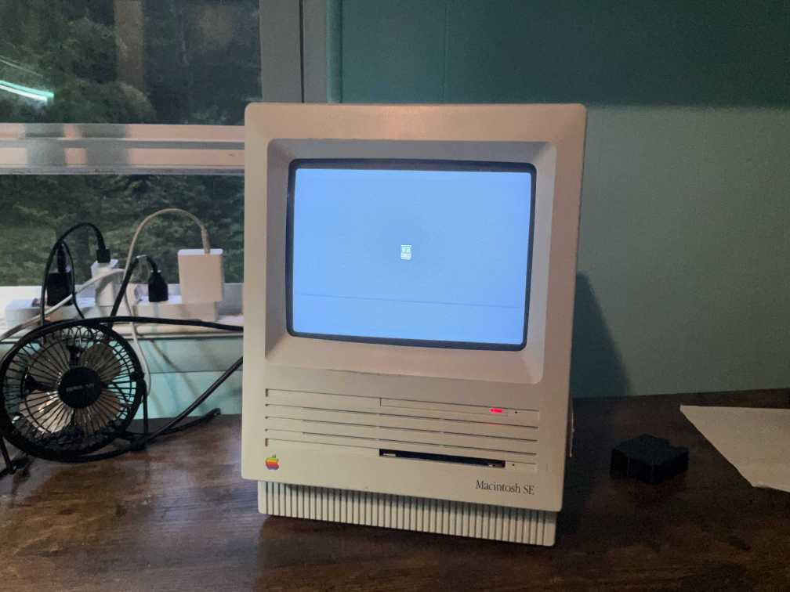
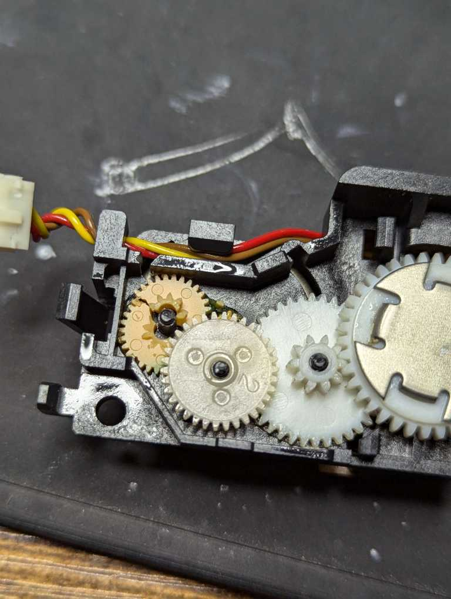
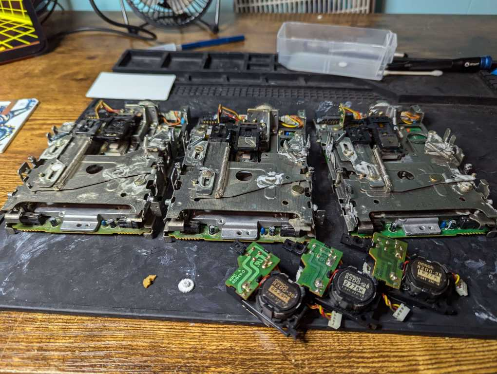
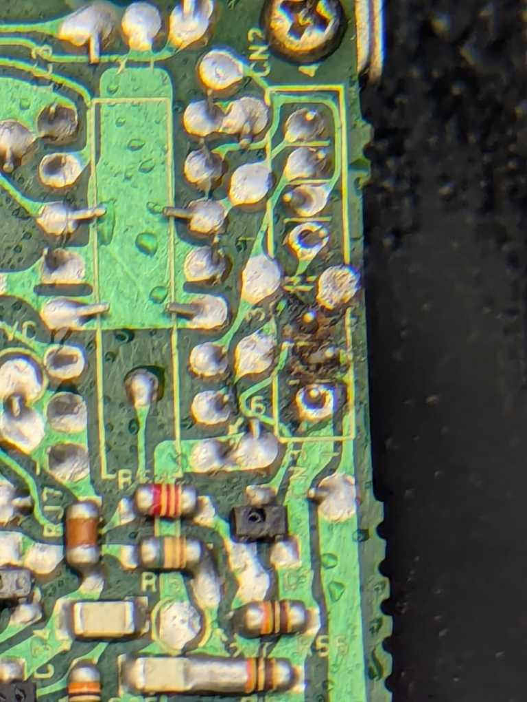
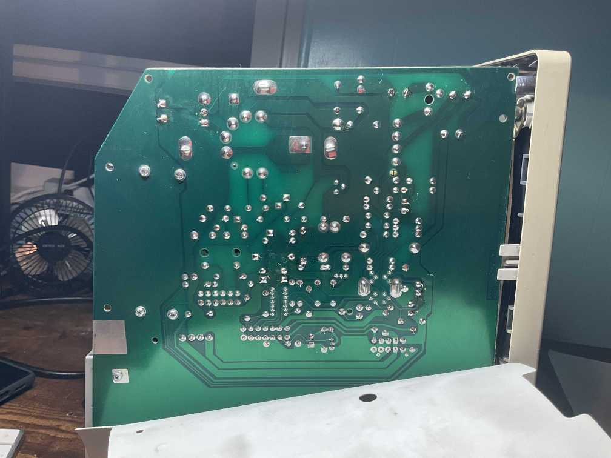
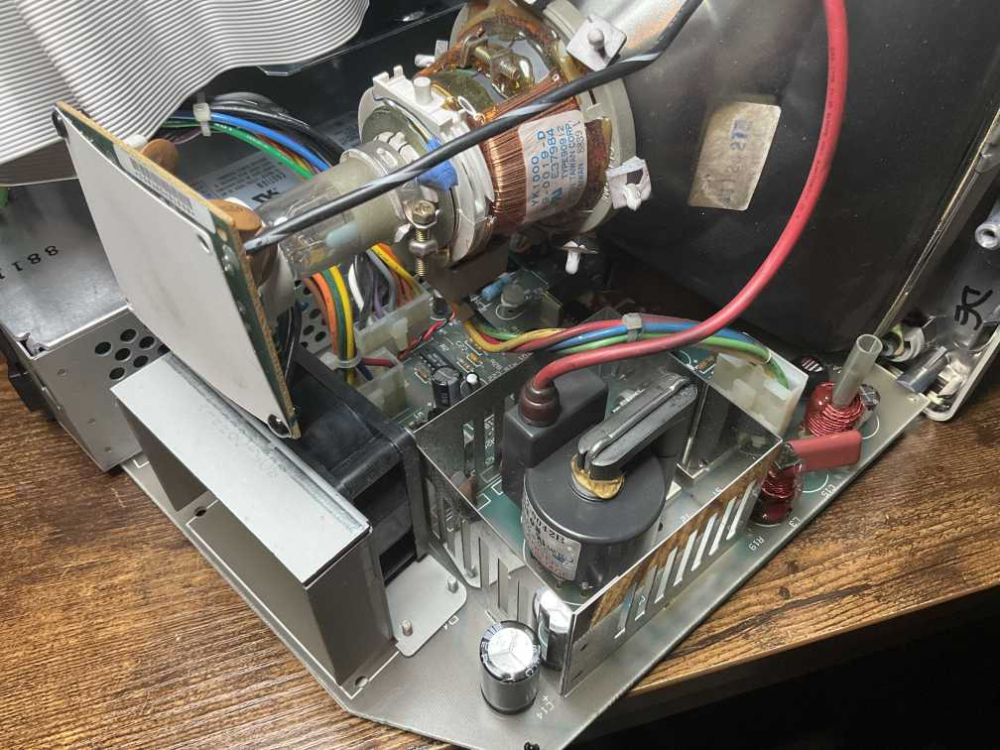
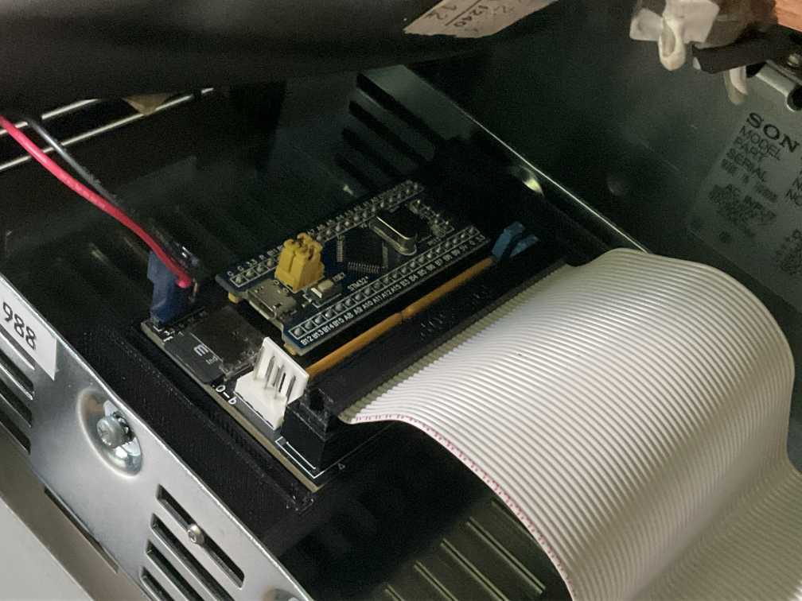

I purchased the computer for about $150 or so. This was worth it considering the fact it came complete with a keyboard, case, mouse, HDD, and FDD. This was pretty good considering that I was able to sell the keyboard and case alone to pay for the entire computer and make my money back.
Honestly there was nothing wrong with it spare the fact that the floppy drive needed the usual lubing, and the capacitors on the power supply needed replacing.
This will be a pretty straightforward repair. More like a servicing.

For one, the eject and inject mechanisms for the floppy drive have gotten gummy after 40 years and needed lubing and cleaning.
For two, the eject motor (the actual gears that moves the eject mechanism) has gears inside of it that have gotten frail and shattered within, which need to be replaced.
This was an easy fix, however out of the three floppy drives I tried to fix only one remained.
This was because:
Fun Fact: The Macintosh 512Ke through the Macintosh SE used 800-Kilobyte floppy drives/disks, only using the much-more common 1.44-Megabyte drives/disks with the SE/30 and beyond. The drives are physically identical and share the same issues.



Following the guide put on the Console5 wiki, I purchased a list of capacitors that go inside the analog board and replaced them all.
There were some issues regarding confusion about the orientation of the way the capacitors go in.
However, there were no issues, and the computer worked perfectly.
Fun note: I didn't know the PSU portion of the analog board also had to be recapped, which extended the repair time to over a week waiting for the other caps to come!


The HDD (Hard Disk Drive) worked perfectly fine.
However, it was big, heavy, and bulky.
Along with that, Miniscribe-brand drives have very high failure rates and it was a miracle mine still worked.
So I took out the drive and replaced it with a BlueSCSI.
The BlueSCSI is a modern SD-card solution for old Macintoshes. You can create volumes and use them as if they were their own separate hard disks.
They also have a way lower rate of failure.

After fixing the main issues, the computer works like new.
There is a fast hard drive that's double the speed of whatever it had previously.
The power supply is completely fixed and has no issues.
And it is able to read, format, and boot from floppy drives without issue.
Mostly everything is stock, and it is a good working historic piece.